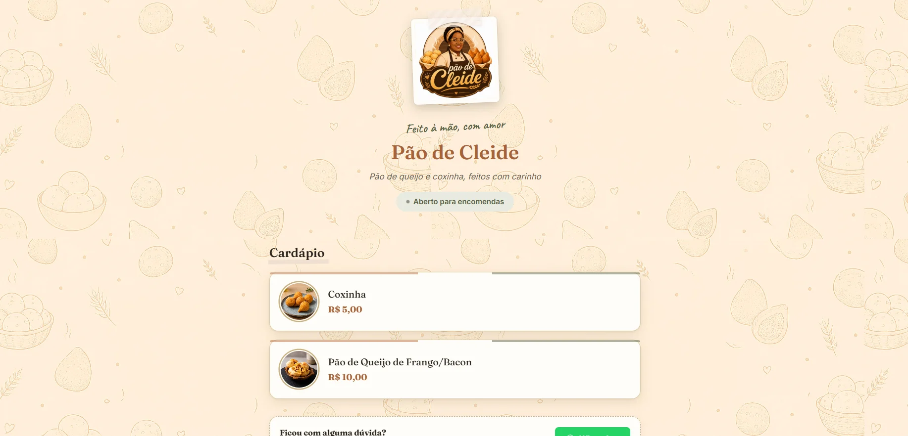
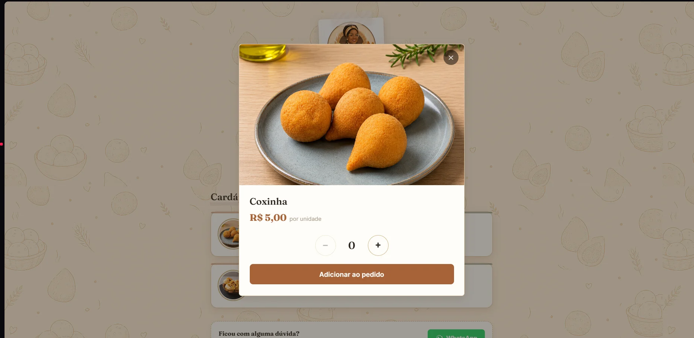
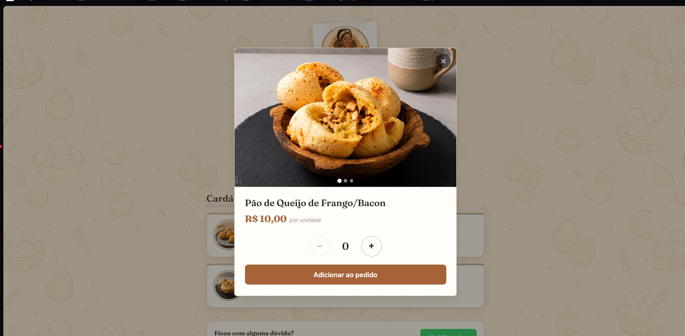
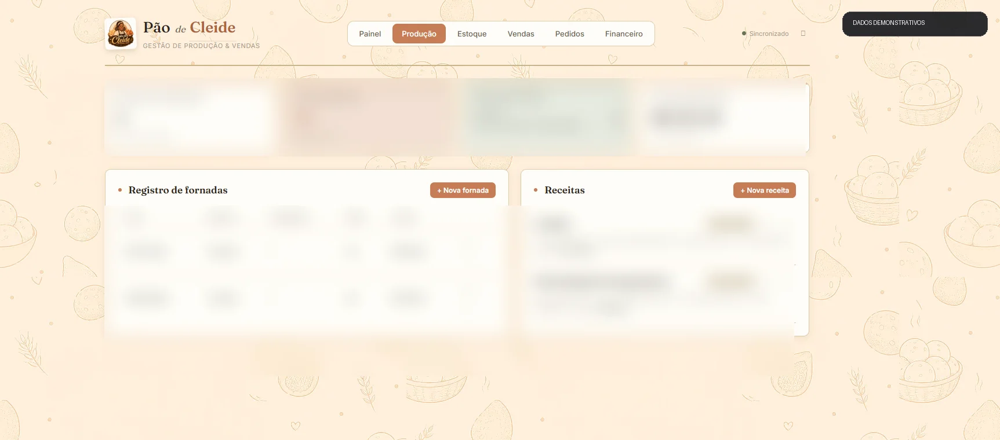
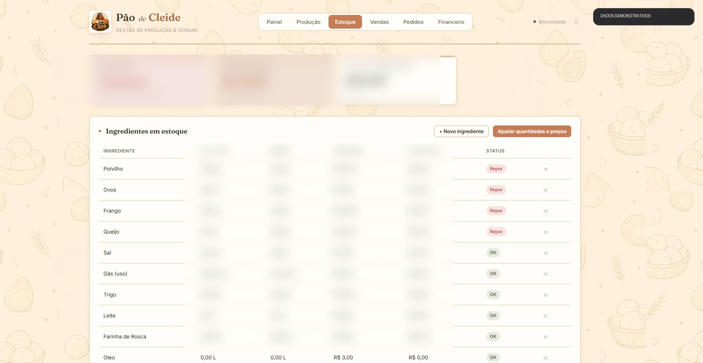
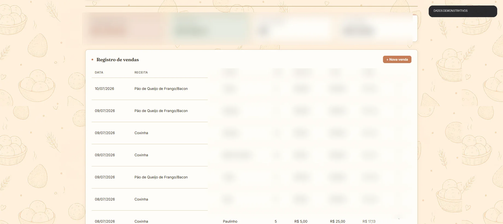
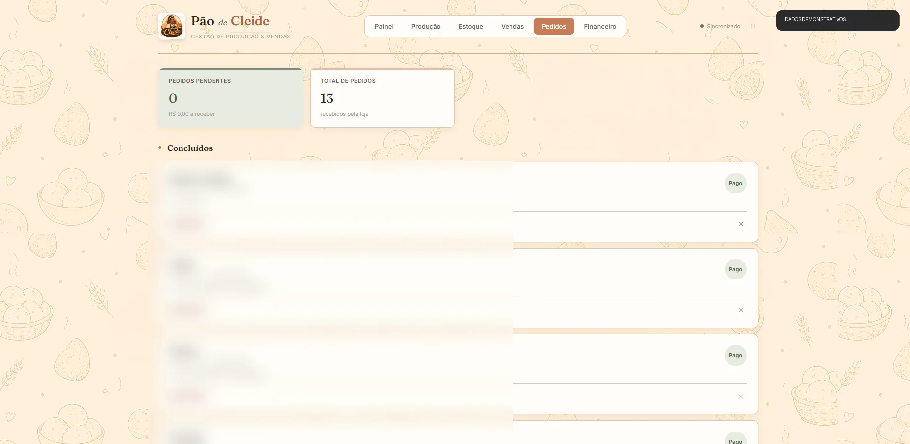
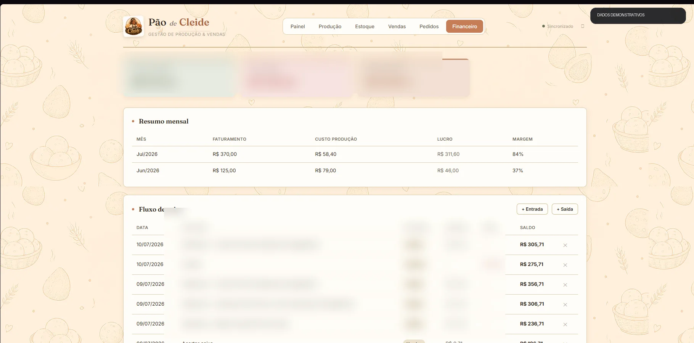

Cardápio digital
Produtos, preços, status da loja e acesso rápido ao atendimento.
Um ecossistema digital que conecta a loja online à produção, ao estoque, às vendas, aos pedidos e ao fluxo de caixa.

O cliente acessa o cardápio, visualiza os produtos, escolhe a quantidade e envia o pedido. Do outro lado, o responsável acompanha a encomenda em um painel conectado aos controles de produção, estoque e financeiro.
O cardápio apresenta os produtos de forma direta. Ao selecionar um item, o cliente vê fotos maiores, preço, quantidade e adiciona o produto ao pedido.
Produtos, preços, status da loja e acesso rápido ao atendimento.

Imagem ampliada, valor, seletor de quantidade e inclusão no pedido.

O cliente consegue visualizar melhor o produto antes de comprar.
O painel foi desenvolvido para acompanhar toda a rotina do negócio. Ele registra fornadas, calcula custos, controla ingredientes, organiza pedidos e mostra o resultado financeiro.
Assim, a solução atende tanto o cliente que compra quanto a pessoa que administra a produção.
Os nomes de clientes e valores nas capturas foram protegidos. As telas e funcionalidades apresentadas são reais.

Faturamento, lucro, estoque, meta mensal, últimas vendas e alertas de ingredientes.

Registro de fornadas, rendimento, custo por receita, estoque produzido e preço de venda.

Quantidade atual, estoque mínimo, custo unitário, valor parado e alerta de reposição.

Histórico, quantidade, preço, faturamento, lucro e ticket médio.

Acompanhamento dos pedidos recebidos, itens, pagamento e andamento da entrega.

Entradas, saídas, saldo, resumo mensal, margem e fluxo de caixa detalhado.